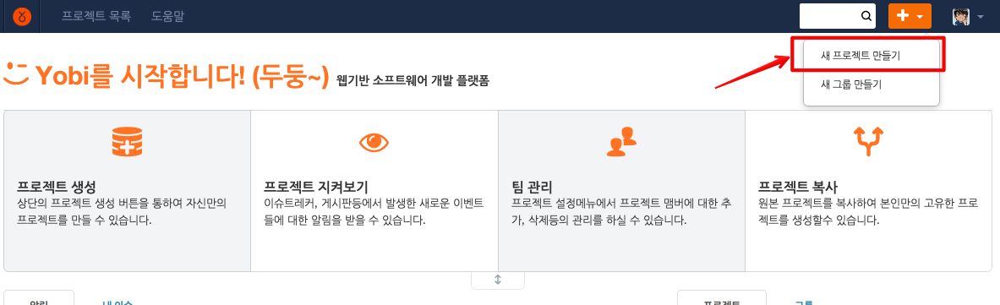
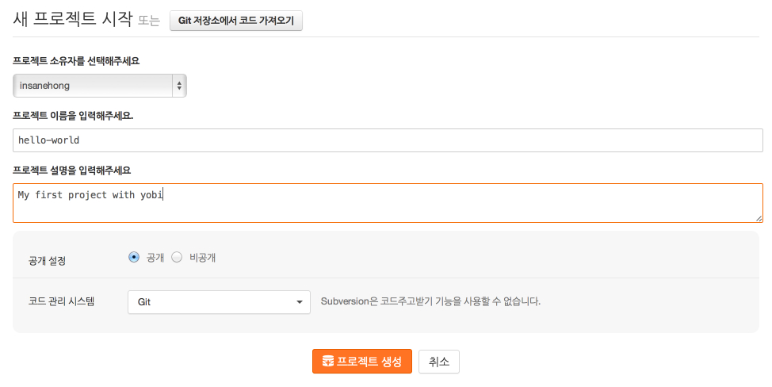
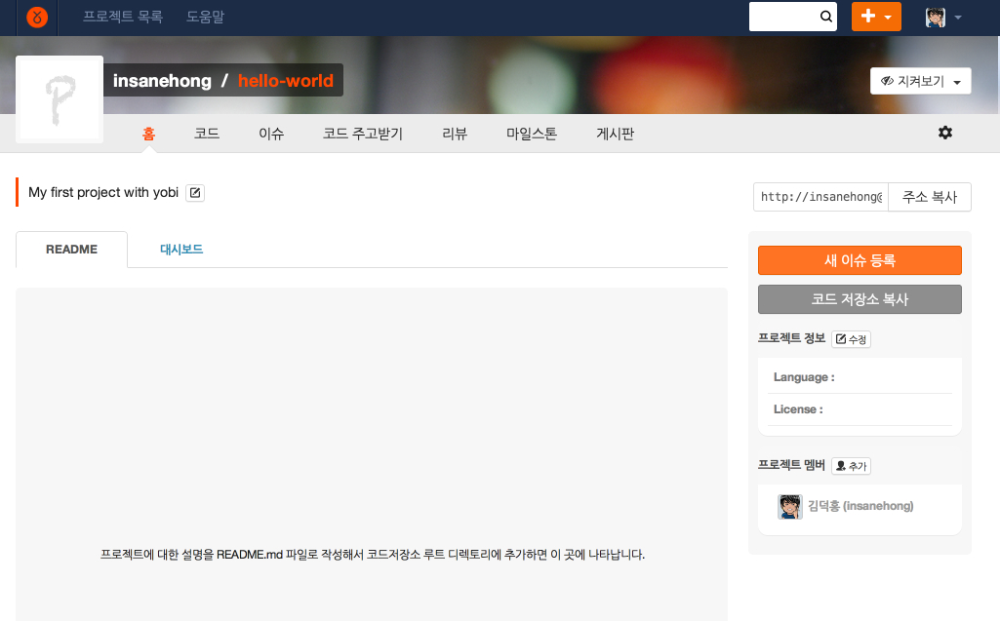
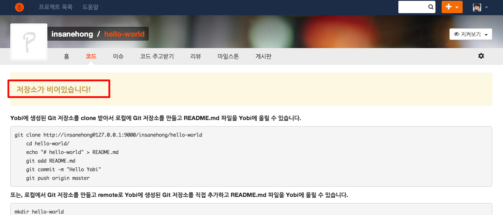
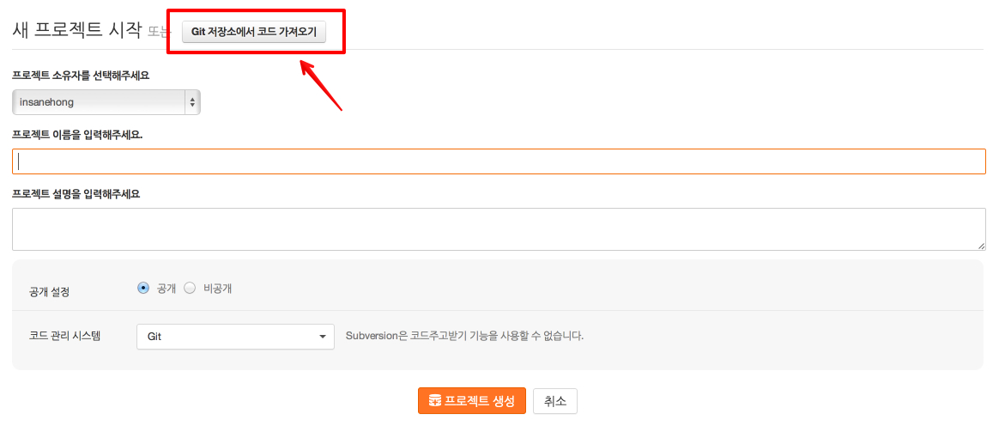
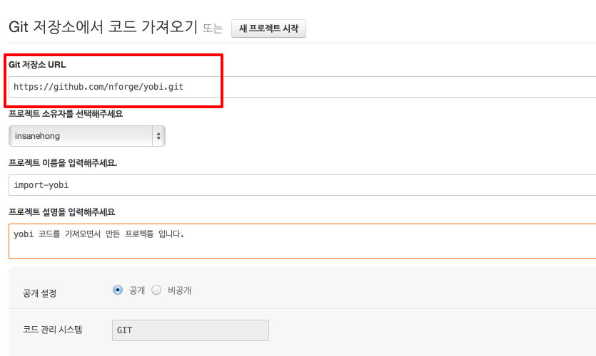
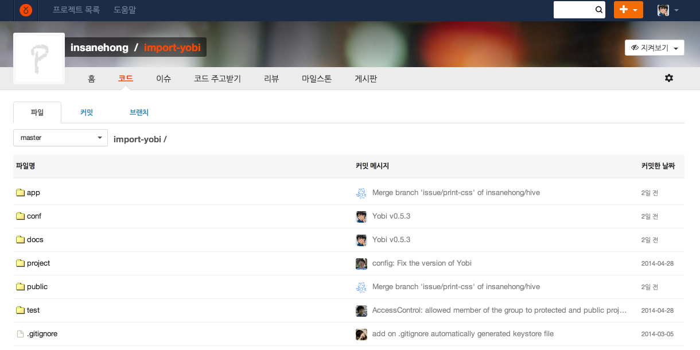

About Author

Insanehong
blog: http://insanehong.kr
twitter: @insanehong
github: insanehong.github.com
- NAVER Corporation, Front-End Engineer(2013~)
- Like Javascript, Dart, HTML5, CSS3,Responsive Web, Haroopress, Frends, Lean Startup, Open Source
- Hackrslab co-founder
- About me http://about.me/insanehong
About this Article
Date Released:
Sunday, May 11 2014 2:58 AMYobi 에서 새로운 프로젝트 시작하기
들어가기 앞서
이 글은 프로젝트관리 경험이 전혀없거나 소프트웨어 개발에 입문하고자 하는 분들이 Yobi 를 사용하는데 필요한 가이드를 위해 작성 되었습니다.
이미 현업에서 프로젝트 관리 기법등을 잘 익혀 오셨거나 특히 Git 과 Github 등을 익숙하게 사용하고 계신분들에게는 도움이 되지 않을수 있음을 먼저 알려드립니다.
또한 지금 기본적으로 Yobi와 Git 이 설치 되어 있어 언제든 프로젝트를 시작 할수 있다는 가정을 하고 시작합니다.
Yobi 에서 새 프로젝트 시작하기
Yobi 에서 새로운 프로젝트를 만들기위해 오른쪽 상단에 있는 새프로젝트 만들기 버튼을 클릭 한다.

프로젝트 생성 페이지에서 소유자(사용자 또는 사용자가 가입된 그룹을 선택하고 프로젝트 이름, 설명등을 입력한다.
프로젝트명은 동일한 사용자의 경우 같은 이름의 프로젝트명을 사용할 수 없지만 다른 사용자 혹은 그룹의 경우 이미 다른 사람이 만든 프로젝트명으로도 프로젝트를 생성할수 있다.

공개설정
- 공개 : 공개 프로젝트의 경우 사이트 상단의
프로젝트 목록메뉴에서 노출되고 검색을 통해서 누구나 해당 프로젝트에 접근 할수 있으며 로그인 사용자는 누구나 이슈트레커, 게시판에 글,댓글을 남기거나 코드리뷰 등에 참여할수 있는 권한을 가지게 된다. - 비공개 : 비공개 프로젝트는
프로젝트 목록메뉴에서 보이지 않으며 프로젝트 맴버를 제외한 다른 사용자는 해당 프로젝트에 접근 할 수 없다.
코드관리 시스템
Yobi 는 GIT 과 SVN 의 코드관리 시스템을 지원한다. 하지만 보다 강화된 코드리뷰 기능(이후에 다룰 예정)와 코드 주고 받기 기능은 GIT 에서만 지원하고 있다.
앞으로 연재될 이후 글들 모두 git 을 사용하여 프로젝트를 관리하는 내용임으로 코드장소는 GIT 을 선택 한다.

이렇게 새로운 프로젝트를 만들게 되면 비어있는 코드저장소를 가진 프로젝트가 생성되게 되게 된다.

이미 만들어진 코드저장소 코드 가져오기
위에서 만든 프로젝트처럼 백지상태에서 시작하는 프로젝트도 있지만 이미 다른 곳에서 만든 코드저장소의 코드를 가져와서 새로운 프로젝트를 만들게 되는 경우도 있다.
이런 경우에는 프로젝트 생성 페이지에 있는 Git 저장소에서 코드 가져오기 버튼을 통해서 이미 만들어진 기존코드를 불러와서 프로젝트를 생성 할수 있다. 단, 버튼 이름에서 알수 있듯이 GIT 코드저장소만 가능하다.

코드 가져오기 버튼을 누르게 되면 기존의 코드를 가져오기 위한 코드 저장소 주소 입력창이 생기며 이곳에 가져올 코드저장소의 주소를 입력한다.

코드가져오기가 완료가 되면 다음 그림과 같이 기존 코드를 가져오면서 프로젝트가 생성되기 때문에 손쉽게 기존의 코드를 사용하는 프로젝트를 생성할 수 있다.

마무리
이번 글에서는 프로젝트를 시작하기 위해 가장 기본이 되는 프로젝틀 생성하는 법에 대해서 적어 보았다. 다음글에서는 이번글에서 만들 코드 저장소가 비어있는 프로젝트에 새로운 코드를 추가 하는 방법과 새로운 코드를 추가 하기 위해 해야하는 간단한 Git 사용법에 대해서 다뤄보도록 할 예정이다.
이 글을 시작으로 작성될 이후의 글들을 잘 따라서 해본다면 Yobi의 숨어있는 기능을들 100% 활용 할수 있을 뿐만 아니라 어느정도의 Git 사용법 또한 익힐 수 있으니 Git입문자의 경우 잘 따라해 보길 바란다.